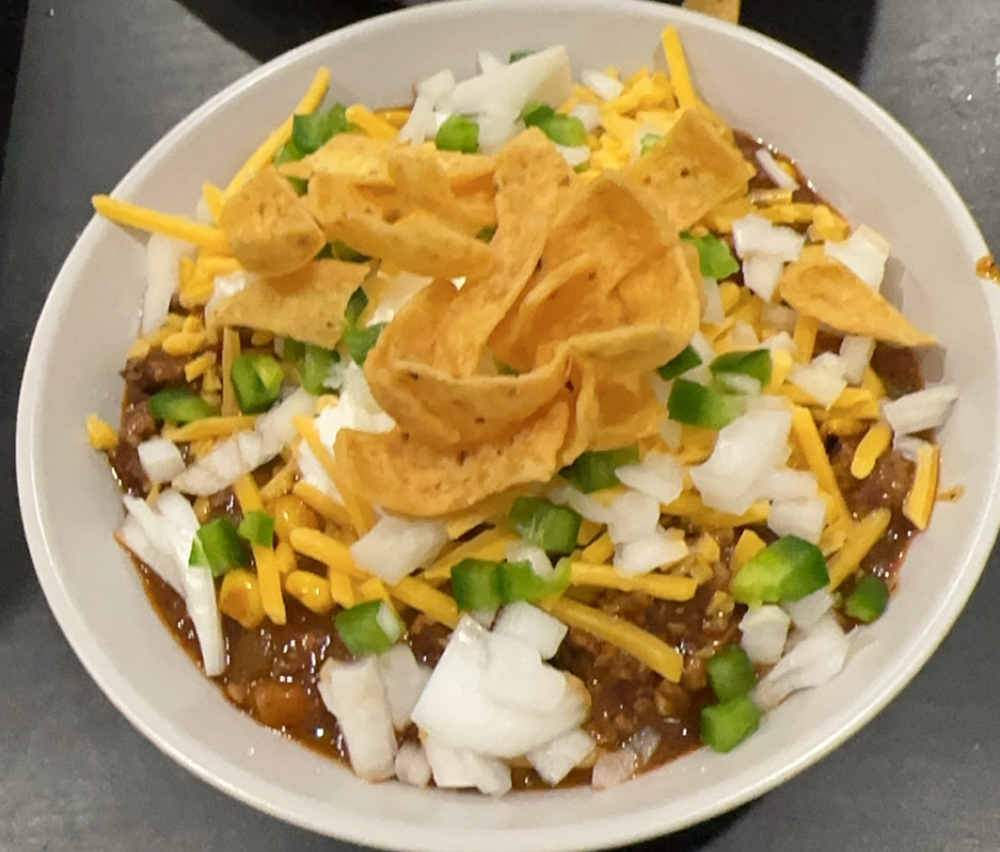

1 Hour Total | 20 Min Prep
Afordable, spicy, meaty, and quick. Nothing comaperes to this easy to make chili recipe. The recipe utilizes some of the best tricks to replicate amazing chili with no hassle.
This recipe only takes around 1 hour and has all the same flavors as a recipe that takes all day long. The recipe is extremely forgiving, so feel free to change accoring to your own preferences.